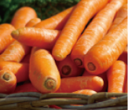
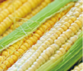
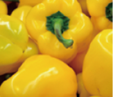

Vegetables

Carrots have a crisp texture and a naturally sweet flavor, making them a versatile ingredient in many dishes. They contain beta-carotene, which the body can convert into vitamin A. Choose firm carrots with smooth, plump surfaces, then wash and cut them to suit your recipe.

Corn has a naturally sweet flavor and can be enjoyed on its own or in a variety of dishes. Corn provides dietary fiber and energy. When choosing corn, look for fresh silks and green husks, and enjoy it soon after purchase for the best flavor.

Bell peppers come in vibrant red, yellow, and orange colors. Bell peppers contain vitamin C and dietary fiber. Choose peppers with glossy skin that feel firm and look plump.
Contact
Have a question about our seasonal produce, farm partnerships, or bulk wholesale orders? Our team is dedicated to bringing the freshest organic vegetables straight from local fields to your table, and we would love to hear from you.
Our customer support hours are Monday through Friday, from 9:00 AM to 6:00 PM. Whether you need assistance tracking a delivery, customizing your weekly vegetable box, or sharing feedback on our harvest quality, please reach out to us anytime.
For any questions or suggestions about Vegetables, Vegetables Club or your online order you can contact Vegetables Customer Service by phone, email or post and we'll be happy to help.
E-mail : Vegetables@aaabbccc.com
PHONE : +886-123-456-789